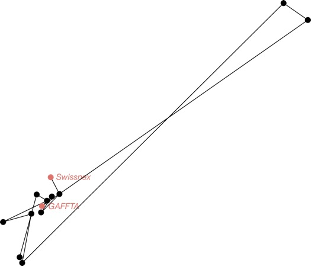
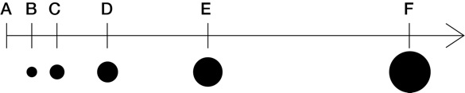

Srinivas ASHOK, ideator, programmer www.linkedin.com/pub/srinivas-ashok/33/bba/a45
Daphné DETHIER, ideator, formulator, graphic designer www.linkedin.com/pub/daphné-dethier/48/9a0/652/en
Carmel DUDLEY, programmer
www.linkedin.com/in/carmeldudley
Steve PEPPLE, ideator, programmer, designer
www.linkedin.com/in/stevepepple
With the participation of Halie Kampman, Balz Mueller, and Tim Sze.
Why?
Our project locations map

The frustration index is based on a LOS scale.
The overall frustration is the combination of three frustration factors:
To correlate the LOS with numerical values, we have distributed the LOS like this: 
Where each LOS value is twice bigger as the previous one, except for A which is 0. The area of each circle associated with a LOS is twice bigger as the previous LOS one, except for LOS A which has no circle.
Each frustration factor is rawly calculated and then associated with a level of service LOS.
The overall frustration is the average of the LOS of the frustration factors.
At the stop n, for the trip t :
Pnt=∑(Bx-Ex)
for x starting at 1 until n (where 1 is the first stop of the trip)
Where ∑ is the sum operation
The Levels Of Service are defined as follows.
| LOS | Load Factor (p/seats) | Comments |
|---|---|---|
| A | 0.00-0.50 | No passenger need sit next to another |
| B | 0.51-0.75 | Passengers can choose where to sit |
| C | 0.76-1.00 | All passengers can sit |
| D | 1.01-1.25 | Comfortable standee load for design |
| E | 1.26-1.50 | Maximum schedule load |
| F | >1.50 | Crush load |
We have searched the number of seats for each vehicle type for each city in order to estimate the load factor, which is associated with a LOS, which represents a level of frustration.
Then, we calculate the average capacity LOS of all the capacity LOS of the trips stopping at the stop considered during our time window.
At the stop n, for the trip t:
Dnt = AAn – SAn
Where:
To calculate the LOS, we take the maximum and minimum of a particular value for delay for the considered route. Then we bucket the data into separate grades based on how close the current value is to the minimum value.
dnt = ( Dnt- d) / (D - d)
Where:
The Levels Of Service are defined as follows.
| LOS | dnt | Comments |
|---|---|---|
| A | 0 – 0.5 | Vehicle on time |
| B | 0.6 – 0.15 | Tolerable delay |
| C | 0.16 – 0.25 | Unreliable system |
| D | 0.26 – 0.35 | Frustrating |
| E | 0.36 – 0.65 | Very frustrating |
| F | >0.66 - 1 | Intolerable delay |
Then, we calculate the average delay LOS of all the delay LOS of the trips stopping at the stop considered during our time window.
Between the stops n and n-1 :
In theory (scheduled time):
Vn,n-1 = Dn,n-1 / STn,n-1
In reality (actual time):
Vn,n-1 = Dn,n-1 / ATn,n-1
With:
| LOS | Vn, n-1 | Comments |
|---|---|---|
| A | 0 – 0.5 | Vehicle moves quickly |
| B | 0.6 – 0.15 | Tolerable slower pace |
| C | 0.16 – 0.25 | Too slow |
| D | 0.26 – 0.35 | Frustrating |
| E | 0.36 – 0.65 | Very frustrating |
| F | >0.66 - 1 | Almost at standstill |
Then, we calculate the average delay LOS of all the delay LOS of the trips stopping at the stop considered during our time window.
We wanted to turn it positive too!
We wanted to add many more frustration factors:
Headway
It is the time between two consecutive trips on a same route. It is a measure of availability.
In theory:
= h = headway
In reality:
= AAb – AAb-1
where b is the bus following the bus b-1
| LOS | AAb – AAb-1 (min) | veh/h | Comments |
|---|---|---|---|
| A | <10 | 6 | Passengers do not need schedules |
| B | 10-14 | >5-6 | Frequent service, passengers consult schedules |
| C | 15-20 | 3-4 | Maximum desirable time to wait if bus/train missed |
| D | 21-30 | 2 | Service unattractive to choice riders |
| E | 31-60 | 1 | Service available during the hour |
| F | >60 | <1 | Service unattractive to all riders |
It is an alternative to the headway.
For someone who doesn’t look at the schedule, his average waiting time at a bus stop is half the headway.
In theory :
= h/2
In reality :
= = (AAb – AAb-1)/2
where b is the bus following the bus b-1
| LOS | (AAb – AAb-1)/2 (min) |
|---|---|
| A | 5 |
| B | 5-10 |
| C | 10-15 |
| D | 15-20 |
| E | 20-30 |
| F | >30 |
Hours of service are a good indicator of availability for the whole route.
= departure time* of the last run – departure time* of the first run + 1 *in hour, based on 24 clock.
| LOS | Hours of Service | Comments |
|---|---|---|
| A | 19-24 | Night or “owl” service provided |
| B | 17-18 | Late evening service provided |
| C | 14-16 | Early evening service provided |
| D | 12-13 | Daytime service provided |
| E | 4-11 | Peak hour service only or limited midday service |
| F | 0-3 | Very limited or no service |
This is a major comfort factor. Therefore, it is also a major frustration factor.
The standard deviation of the average speeds between two stops estimates if a trip is subject to high variation in its speed.
Other indicators, such as the ratio number of stops/length of the route, can help figuring the speed variation.
| LOS | Travel Time Difference (min) | Comments |
|---|---|---|
| A | ≤0 | Faster by transit than by automobile |
| B | 1-15 | About as fast by transit as by automobile |
| C | 16-30 | Tolerable for choice riders |
| D | 31-45 | Round-trip at least an hour longer by transit |
| E | 46-60 | Tedious for all riders; may be best possible in small cities |
| F | >60 | Unacceptable to most riders |
It is a good frustration factor on the planner side.
A happy trip planner!
It defines personalized routes minimizing the frustration of the users. The user tunes his own frustration index by checking or giving weight to some frustration factors, ie capacity, delay, speed, waiting time, ...
Then, the app defines the dream route for the user, which minimizes his personal frustration.
Srinivas ASHOK, concepteur, programmeur www.linkedin.com/pub/srinivas-ashok/33/bba/a45
Daphné DETHIER, conceptrice, développeuse, graphic designer www.linkedin.com/pub/daphné-dethier/48/9a0/652/en
Carmel DUDLEY, programmeuse www.linkedin.com/in/carmeldudley
Steve PEPPLE, concepteur, programmeur www.linkedin.com/in/stevepepple
Avec la participation de Halie Kampman, Balz Mueller, et Tim Sze.
Pourquoi?
La carte de nos rendez-vous:
L’indice de frustration est calqué sur une échelle de niveaux de service (LOS). La frustration totale est la combinaison des trois facteurs de frustration:
Afin de corréler les niveaux LOS avec des valeurs numériques, nous avons opté pour cette relative distribution :
Où chaque valeur de LOS est deux fois plus grande que la valeur du LOS précédent, sauf pour le LOS A qui vaut zéro.
La surface de chaque cercle associé à un LOS est deux fois plus importante que celle du cercle correspondant au précédent LOS, sauf pour le LOS A dont le rayon du cercle est nul.
Chaque facteur de frustration est calculé numériquement puis associé à un niveau de service LOS. La frustration totale est la moyenne des niveaux de service LOS des facteurs de frustration.
A l’arrêt n, pour le trip t (un trip est un véhicule assigné à un itinéraire et à un horaire) :
Pnt=∑(Bx-Ex)
pour x qui va de 1 à n (où 1 est le premier arrêt du trip)
Où ∑ représente l’opération sommation
Afin de définir les niveaux de service, nous calculons le facteur de charge comme suit :
| LOS | Facteur de charge (Pnt/siège ) | Commentaires |
|---|---|---|
| A | 0.00-0.50 | No passenger need sit next to another |
| B | 0.51-0.75 | Passengers can choose where to sit |
| C | 0.76-1.00 | All passengers can sit |
| D | 1.01-1.25 | Comfortable standee load for design |
| E | 1.26-1.50 | Maximum schedule load |
| F | >1.50 | Crush load |
Enfin, nous calculons la moyenne des LOS de capacité de tous les trips qui s’arrêtent à l’arrêt considéré durant l’intervalle de temps considéré (durée de 5 minutes).
A l’arrêt n, pour le trip t (un trip est un véhicule assigné à un itinéraire et à un horaire):
Dnt = AAn – SAn
Where:
Pour calculer le niveau de service LOS, nous définissons la valeur maximale et minimale du retard sur l’itinéraire considéré. Ensuite, nous définissons des intervalles basés sur la différence entre la valeur de retard considérée et la valeur minimale.
dnt = ( Dnt- d) / (D - d)
Où
Les niveaux de service LOS sont définis comme suit.
| LOS | dnt | Commentaires |
|---|---|---|
| A | 0 – 0.5 | Véhicule à l’heure |
| B | 0.6 – 0.15 | Retard tolérable |
| C | 0.16 – 0.25 | Système non fiable |
| D | 0.26 – 0.35 | Frustrant |
| E | 0.36 – 0.65 | Très frustrant |
| F | >0.66 - 1 | Retard intolérable |
Entre les arrêts n et n-1 :
En théorie (horaires) :
Vn,n-1 = Dn,n-1 / STn,n-1
En réalité (temps réel) :
Vn,n-1 = Dn,n-1 / ATn,n-1
With:
| LOS | Vn, n-1 | Commentaires |
|---|---|---|
| A | 0 – 0.5 | Le véhicule avance vite |
| B | 0.6 – 0.15 | Vitesse ralentie tolérable |
| C | 0.16 – 0.25 | Trop lent |
| D | 0.26 – 0.35 | Frustrant |
| E | 0.36 – 0.65 | Très frustrant |
| F | >0.66 - 1 | Quasi à l’arrêt |
Ensuite, nous calculons le LOS de vitesse moyen de tous les LOS de vitesse des trips qui s’arrêtent à l’arrêt considéré durant notre intervalle de temps.
Nous voulions inverser l’index et présenter sa version positive !
Montrer la carte négative de l’index de frustration : la carte du bonheur !
Nous voulions inclure bien plus de facteurs de frustrations:
Fréquence de l’offre
Il s’agit de l’intervalle de temps entre deux trips consécutifs. C’est une mesure de la disponibilité de l’offre.
E théorie:
= h = headway
En réalité:
= AAb – AAb-1
avec t le trip qui suit le trip t-1
| LOS | AAb – AAb-1 (min) | veh/h | Commentaires |
|---|---|---|---|
| A | <10 | 6 | Les passagers n’ont pas besoin d’horaire |
| B | 10-14 | >5-6 | Service fréquent, les passagers consultent l’horaire |
| C | 15-20 | 3-4 | Temps d’attente maximum tolérable si trip manqué |
| D | 21-30 | 2 | Service non attractif pour l’utilisateur qui a le choix |
| E | 31-60 | 1 | Service disponible à l’heure |
| F | >60 | <1 | Service non attractif pour tous utilisateurs |
C’est une alternative à la fréquence.
Un utilisateur qui ne fie pas aux horaires attendra en moyenne une durée égale à la moitié de la fréquence (headway) du service.
En théorie:
= h/2
En réalité:
= = (AAb – AAb-1)/2
avec t le trip qui suit le trip t-1
AAt-1 est l’heure réelle d’arrivée du trip t-1
| LOS | (AAb – AAb-1)/2 (min) |
|---|---|
| A | 5 |
| B | 5-10 |
| C | 10-15 |
| D | 15-20 |
| E | 20-30 |
| F | >30 |
Il s’agit d’un bon indicateur à l’échelle d’une ligne.
= heure de départ du dernier trip – heure de départ du premier trip + 1.
| LOS | Couverture | Commentaire |
|---|---|---|
| A | 19-24 | Service de nuit fourni |
| B | 17-18 | Service de fin de soirée fourni |
| C | 14-16 | Service de début de soirée fourni |
| D | 12-13 | Service de jour |
| E | 4-11 | Service aux heures de pointes uniquement ou temps de midi |
| F | 0-3 | Service très limité ou inexistant |
Il s’agit d’un facteur majeur de confort. Dès lors, il s’agit aussi d’un majeur facteur de frustration
L’écart type des vitesses moyennes entre deux arrêts permet d’évaluer si un trip est sujet à de grandes variations dans sa vitesse.
D’autres indicateurs, tels que le ratio entre le nombre d’arrêts et la longueur (en distance) de la route, permet également d’estimer les variations de vitesses.
| LOS | Différence de durée (min) | Commentaires |
|---|---|---|
| A | ≤0 | Plus rapide en transport public qu’en voiture |
| B | 1-15 | Quasi le même temps de trajet pour les deux modes |
| C | 16-30 | Tolérable pour un utilisateur qui a le choix |
| D | 31-45 | Au moins une heure de plus en transport public pour un trajet aller-retour |
| E | 46-60 | Pénible pour tout utilisateur |
| F | >60 | Inacceptable pour la plupart des utilisateurs |
C’est un bon facteur de frustration coté planificateur.
oyage heureux !
Une application qui offre des planifications d’itinéraires lesquels maximisent le bonheur de l’utilisateur.
L’application définit des itinéraires personnalisés qui minimisent la frustration des utilisateurs.
L’utilisateur définit son propre index de frustration en choisissant et en pondérant les facteurs de frustrations (capacité, retard, vitesse, temps d’attente, …).
Ensuite, l’application définit l’itinéraire rêvé pour un utilisateur heureux !
Srinivas ASHOK, ideator, programmer www.linkedin.com/pub/srinivas-ashok/33/bba/a45
Daphné DETHIER, ideator, formulator, graphic designer www.linkedin.com/pub/daphné-dethier/48/9a0/652/en
Carmel DUDLEY, programmer www.linkedin.com/in/carmeldudley
Steve PEPPLE, ideator, programmer, designer www.linkedin.com/in/stevepepple
golfe händ au Halie Kampman, Balz Mueller, and Tim Sze.
Warum?
Projekt Ort uf de charte:
De Frustrations index isch basiert uf em LOS scale.
An kombinierte frust us 3 Teil: Kapazität Verspötigkeit und Schnelligkeit.
Alli Faktore werded mit roher LOS Compi Data berechnet und in verbindung gestzt.
Um die LOS mit numerischen Werten korrelieren, haben wir die LOS wie folgt verteilt:
Wobei jeder LOS Wert ist zweimal größer als die vorherige.
Außer LOS A, welcher 0 ist.
Die Fläche jeder Kreis mit einem LOS zugeordnet ist zweimal größer als die vorherige LOS ein.
Außer LOS A, der keinen Kreis hat.
Jeder Frustfaktor ist rawly berechnet. Dann wird es mit einem LOS verbunden.
Die allgemeine Frustration ist der Durchschnitt der LOS der Frustration Faktoren.
An der Haltestelle n, für das Trip t (ein Trip ist ein Fahrzeug auf einer bestimmten Route und Zeitplan zugewiesen) :
Pnt=∑(Bx-Ex)
für x beginnend bei 1 bis n (wobei 1 die erste Station der Trip ist)
Wo ∑ ist die Summe Betrieb
Die LOS sind wie folgt definiert.
| LOS | Lastfaktor (Passagiere/Sitzplätze) | Kommentar |
|---|---|---|
| A | 0.00-0.50 | Kein Passagier braucht sitzen neben anderen |
| B | 0.51-0.75 | Passagiere können wählen, wo Sie sitzen |
| C | 0.76-1.00 | Alle Passagiere sitzen können |
| D | 1.01-1.25 | Komfortable standee Last |
| E | 1.26-1.50 | Maximale Zeitplan Last |
| F | >1.50 | Crush Last |
An der Haltestelle n, für das Trip t (ein Trip ist ein Fahrzeug auf einer bestimmten Route und Zeitplan zugewiesen):
Dnt = AAn – SAn
Wo:
dnt = ( Dnt- d) / (D - d)
Wo:
Die LOS sind wie folgt definiert.
| LOS | dnt | Kommentare |
|---|---|---|
| A | 0 – 0.5 | Vehicle on time |
| B | 0.6 – 0.15 | Tolerable delay |
| C | 0.16 – 0.25 | Unreliable system |
| D | 0.26 – 0.35 | Frustrating |
| E | 0.36 – 0.65 | Very frustrating |
| F | >0.66 - 1 | Intolerable delay |
Zwischen den Haltestellen n und n-1:
In der Theorie :
Vn,n-1 = Dn,n-1 / STn,n-1
In Wirklichkeit :
Vn,n-1 = Dn,n-1 / ATn,n-1
Mit:
| LOS | Vn, n-1 | Kommentare |
|---|---|---|
| A | 0 – 0.5 | Fahrzeug bewegt sich schnell |
| B | 0.6 – 0.15 | Tolerable langsamer |
| C | 0.16 – 0.25 | zu langsam |
| D | 0.26 – 0.35 | frustrierend |
| E | 0.36 – 0.65 | sehr frustrierend |
| F | >0.66 - 1 | Fast im Stillstand |
Wir hand alles is positive gwächslet.
FRUST FAKTORENWir händ no wölle mehr frust Faktoren dazu nä.
Progression / headway
Er ist ein Maß an Verfügbarkeit.
In der Theorie:
= h = headway
In Wirklichkeit:
= AAb – AAb-1
wo t ist der Trip folgenden der Trip t-1
| LOS | AAb – AAb-1 (min) | veh/h | Kommentare |
|---|---|---|---|
| A | <10 | 6 | Passagiere müssen nicht Zeitpläne |
| B | 10-14 | >5-6 | Häufige Service, beraten Passagiere Zeitpläne |
| C | 15-20 | 3-4 | Maximale wünschenswert Zeit zu warten, wenn Bus / Zug verpasst |
| D | 21-30 | 2 | Service unattraktiv Wahl Fahrer |
| E | 31-60 | 1 | Service zur Verfügung während der Stunde |
| F | >60 | <1 | Service unattraktiv für alle Fahrer |
Es ist eine Alternative zu der Progression.
In der Theorie:
= h/2
n Wirklichkeit:
= = (AAb – AAb-1)/2
wo t ist der Trip folgenden der Trip t-1
| LOS | (AAb – AAb-1)/2 (min) |
|---|---|
| A | 5 |
| B | 5-10 |
| C | 10-15 |
| D | 15-20 |
| E | 20-30 |
| F | >30 |
Ich ist ein anderer guter Indikator für die Verfügbarkeit.
= Abfahrt * des letzten Laufs - Abfahrt * des ersten Laufs + 1
| LOS | Hours of Service | Kommentare |
|---|---|---|
| A | 19-24 | Nacht Dienstleistung |
| B | 17-18 | Am späten Abend Dienstleistung |
| C | 14-16 | Am frühen Abend Dienstleistung |
| D | 12-13 | Daytime Dienstleistung |
| E | 4-11 | Peak-Stunden-Dienstleistung oder nur begrenzte Mittag-Dienstleistung |
| F | 0-3 | Sehr begrenzte oder kein Dienstleistung |
Dies ist ein wichtiger Wohlfühlfaktor. Daher ist es auch ein wichtiger Frustfaktor.
Die Standardabweichung der durchschnittlichen Schnelligkeits zwischen zwei Haltestellen Schätzungen, wenn ein Trip unterliegt hohen Variation in ihrer Schnelligkeit.
Andere Indikatoren wie das Verhältnis Anzahl der Haltestellen / Länge der Route, kann helfen, herauszufinden die Schnelligkeit Variation.
| LOS | Reise Zit differänz (min) | Kommentare |
|---|---|---|
| A | ≤0 | Schneller durch den Transit als mit dem Auto |
| B | 1-15 | Über so schnell durch den Transit wie mit dem Auto |
| C | 16-30 | Tolerable für Wahl Fahrer |
| D | 31-45 | Hin-und Rückflug mindestens eine Stunde länger durch den Transit |
| E | 46-60 | Langwierige für alle Fahrer, kann es am besten möglich, in kleinen Städten |
| F | >60 | Inakzeptabel für meisten Fahrer |
Es isch au guet für de Planner de zugang zu de data vo de App zha.
A happy trip planner!
Es definiert de persöndlichi Wäg und reduziert de frust vo de Mitfahrer.
De Mitfahrer indexiert sin eigene frust index in dem er entscheide was wichtig isch für sini Reis (Kapazität, Verspötigkeit, Schnelligkeit, Wartezeit, ...).
Die Natel app definiert a Traumroute welchi die persöndlich frustration reduziert.